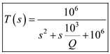
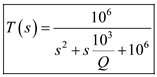

The transfer function is,
…… (1)
For dc, the transfer function is,
Substitute  for
for  in the equation.
in the equation.
Substitute for  and for in equation (1).
and for in equation (1).
Thus, the transfer function of the filter is, .
Refer to Figure 16.16(a) in the textbook for the |T| characteristics and S-plane singularities of second order Low pass filter.
For second order low pass filter, the transfer function is,
The angular frequency is,
,
The quality factor is,
and
DC gain =1.
The transfer function is,
…… (1)
For dc, the transfer function is,
Substitute for in the equation.
Substitute for and for in equation (1).
Thus, the transfer function of the filter is, .
The maximum frequency is,
Thus, the magnitude is maximum at .
The peak transmission is,
Substitute for  and 1 for Q in the equation.
and 1 for Q in the equation.
The peak value in terms of decibels is,
Thus, the peak transmission is, .